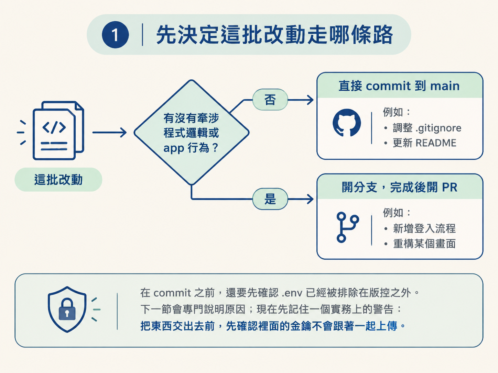
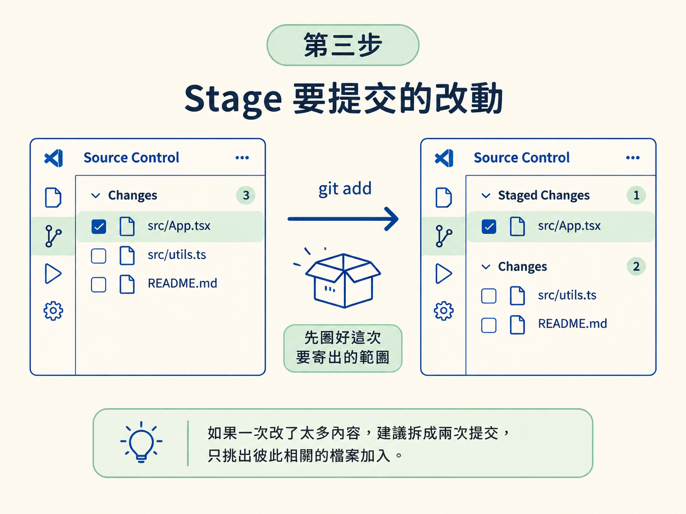
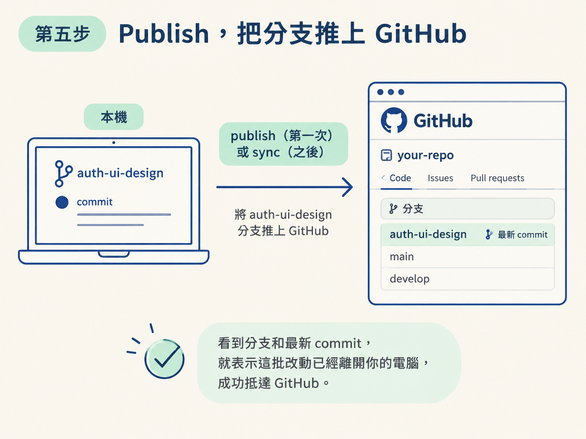

讀完這一節後，你可以照著 stage → 讓 AI 產生 commit message → commit → publish/sync 的順序，完成一次完整提交；也能判斷一批改動應該直接提交到 main，還是先開分支、完成後建立 PR。
上一節已經把時間線講清楚，但真正坐在編輯器前面時，你面對的不是一張圖，而是一排按鈕和一批檔案。這時通常會冒出幾個問題：現在的改動該直接 commit，還是先開分支？commit message 要自己想嗎？push 出去之後，又要怎麼確認真的成功？
這一節把時間線上的幾個動作，整理成一條每天都能重複使用的操作流程。你可以把它想成寄出包裹：先決定要走哪個配送路線，再整理要寄出的內容，貼上標籤，最後交給物流並確認包裹已經離開手上。
動手前先確認兩件事：你已經有一個本機專案，也就是前面節點建立的 Expo app；而且這個專案已經連到一個 GitHub repo。如果還沒有，後面會補上第一次建立連結的方式。已經連好的話，就直接從日常流程開始。
不是每次改動都值得開分支。先問一個簡單的問題：這批改動有沒有牽涉程式邏輯或 app 行為？
若只是幾乎沒有邏輯的設定調整，例如改環境變數名稱或補一個 .gitignore 條目，可以直接 commit 到 main。但只要改動涉及程式碼或使用者看得到的行為，就先開分支，完成後再建立 PR。這樣主線不會像正在營業的店面一樣，被半成品堵住出入口。
| 改動類型 | 做法 | 例子 |
|---|---|---|
| 小、幾乎沒有邏輯的設定 | 直接 commit 到 main | 調整 .gitignore、更新 README |
| 涉及程式碼或行為 | 開分支，完成後開 PR | 新增登入流程、重構某個畫面 |
在 commit 之前，還要先確認 .env 已經被排除在版控之外。下一節會專門說明原因；現在先記住一個實務上的警告：把東西交出去前，先確認裡面的金鑰不會跟著一起上傳。

如果這批改動涉及邏輯，先在編輯器裡建立一條分支。在 VS Code 裡，可以按 Command + Shift + P 開啟命令面板，輸入建立分支的指令，再替分支取一個看得懂的名字。
分支名稱最好直接說明這條線要處理什麼，例如 auth-ui-design。相較之下，test 或 fix 太模糊，過幾天回頭看時，很難知道裡面到底放了什麼。
# 等價的終端機指令
git checkout -b auth-ui-design執行後，請看 VS Code 左下角的分支名稱。它應該會從 main 變成你剛取的名字。看到這個變化，就表示你已經站到新的平行線上；接下來的改動會留在這條分支，不會直接混進 main。
分支準備好後，選出這次要提交的檔案，加入暫存區。這個動作叫做 stage。它像是把要放進這次包裹的物品先裝箱，還沒正式寄出，但範圍已經圈好了。
在 VS Code 的 Source Control 面板中，你會看到這批改動的檔案清單。按一下，把要提交的檔案加入暫存區；終端機的對應指令是 git add。
git add .預期看到的結果是：檔案從「Changes」移到「Staged Changes」。如果你一次改了太多內容，想拆成兩次提交，就不要直接把所有檔案都加入；請在這一步只挑出彼此相關的檔案。

接著讓 AI 協助整理 commit message。按下產生訊息的按鈕後，agent 會讀取你已經 stage 的內容，產生一句描述這批改動的訊息。
這裡的重點是檢查 AI 有沒有準確描述實際改動，不用完全相信它，也不必每次從頭重寫。確認內容合理後，再按下按鈕完成 commit。
git commit -m "feat: 加入 Google 與 Apple 登入畫面與 Clerk 驗證"好的 commit message，應該讓人一眼知道這批改動做了什麼。上面的例子直接說明加入了哪些登入畫面，以及使用哪一套驗證方式。
如果 AI 把「修正登入流程」寫成「修改資料庫」，不要直接略過。這表示它可能誤讀了內容，也可能代表你 stage 了不該一起提交的檔案。先停下來檢查，確認問題後再 commit。
完成 commit 只代表改動存在於你的本機。要讓它出現在 GitHub，讓其他人和審查工具都看得到，還需要把分支推上去。
第一次推送一條新分支時，編輯器通常會要求你 publish 這條分支。之後如果同一條分支又有新的 commit，就按 sync 即可。
git push -u origin auth-ui-design怎麼確認推送成功？打開 github.com 上的這個 repo，重新整理頁面。你應該會在分支清單中看到 auth-ui-design，而且最新的 commit 正是剛才建立的那一筆。
看到分支和最新 commit，就表示這批改動已經離開你的電腦，成功抵達 GitHub。

如果你是完全從零開始，日常流程只會多一個前置步驟：先在 github.com/new 建立一個空的 repo，再把本機專案連上去，最後推送第一次提交。
連結完成後，前面的日常流程不變；只是第一次推送時，分支通常會是 main。
git remote add origin git@github.com:你的帳號/專案名稱.git
git push -u origin main課程在這裡同樣使用 AI 產生第一筆 commit message，再把 GitHub 提供的推送指令整段貼上。完成第一次連結後，每次功能收尾，就回到前面的日常流程。
main，或建立新的分支。動手前先用「有沒有牽涉邏輯」決定走哪條路：小設定直接 commit 到 main，涉及程式碼就開分支。日常流程是建立分支 → stage → 讓 AI 產生 commit message → commit → publish/sync。做完的驗證方式，是到 GitHub 上確認那條分支與最新的 commit 都在。
走到這裡，你的分支已經推上 GitHub，但還沒有合併回 main，因為中間還缺少審查這一關。下一節會把 PR 開起來，交給 CodeRabbit 逐行掃描，再把它的意見送回 agent 修正。